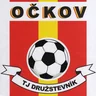
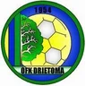

Najbližší zápasB-mužstvo · Halový turnaj o Pohár predsedu ZsFZ, 1. kolo
Výkop o 08:30
 TJ Klas Beša (hostia)
TJ Klas Beša (hostia)· 08:30
Návrh webu · nie je to oficiálna stránka klubu
VII. liga ObFZ Trenčín · 1. miesto z 15 · tréner Michal Hrbas
Najbližší zápasB-mužstvo · Halový turnaj o Pohár predsedu ZsFZ, 1. kolo
Výkop o 08:30
TJ Klas Beša (hostia)· 08:30
12–1–1výhry, remízy, prehry · skóre 45:17
VII. liga ObFZ Trenčín
| # | Tím | Z | V | R | P | Skóre | B |
|---|---|---|---|---|---|---|---|
| 1 | 14 | 12 | 1 | 1 | 45:17 | 37 | |
| 2 | 14 | 9 | 2 | 3 | 43:17 | 29 | |
| 3 | 14 | 9 | 1 | 4 | 44:19 | 28 | |
| 4 | 14 | 8 | 3 | 3 | 32:19 | 27 | |
| 5 | 14 | 7 | 2 | 5 | 35:29 | 23 | |
| 6 | 14 | 6 | 3 | 5 | 25:27 | 21 | |
| 7 | 14 | 6 | 3 | 5 | 44:32 | 21 | |
| 8 | 14 | 6 | 3 | 5 | 28:24 | 21 | |
| 9 | 14 | 5 | 3 | 6 | 22:32 | 18 | |
| 10 |  TJ Družstevník Očkov | 13 | 5 | 0 | 8 | 29:34 | 15 |
| 11 | 14 | 5 | 0 | 9 | 26:47 | 15 | |
| 12 | TJ Slovan Zamarovce | 13 | 3 | 4 | 6 | 21:31 | 13 |
| 13 |  OFK Drietoma | 14 | 2 | 4 | 8 | 13:36 | 10 |
| 14 | 14 | 2 | 3 | 9 | 15:31 | 9 | |
| 15 | 14 | 2 | 2 | 10 | 20:47 | 8 |
Hráči, ktorí v roku 2026 nastúpili alebo boli v nominácii (Sportnet).